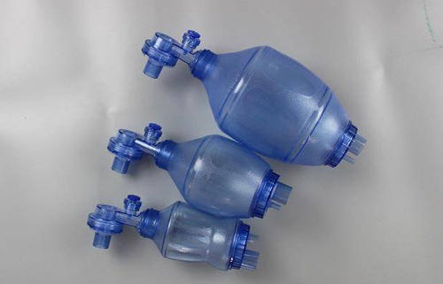
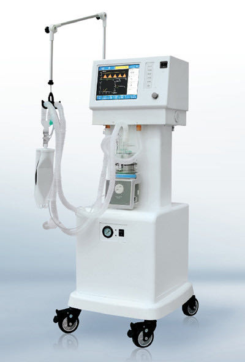

你好，欢迎来到《医学通识50讲》，我是薄世宁。
咱们今天上课以前，先开个“医院运动会”。
你是领导，站在主席台上检阅各个科的方队。
那你能通过医生手里的“武器”，判断他是哪个科的吗？
现在走来了一群脖子上跨着听诊器的，你一眼就看出来了，这是心脏科的。
接着来了一群拿手术刀的，你又猜对了，这是外科医生，拿手术刀做手术。
后面走来了一群手里拿着凿子、锤子的。没错，这是骨科医生。敲敲打打，不仅是技术活，还是体力活。
又来了一群戴着高度近视镜，手里端着显微镜的。这是病理科医生，天天盯着显微镜看，把眼睛都看坏了。
最后来了一大堆医生，一起用力地推着一台机器。这个机器方“脑袋”，下面是空气压缩机，边上还有一根长长的管子。
这是什么呢？
这个铁家伙一般你没见过，只要见过就是遇到大麻烦了。
这就是呼吸机。推着呼吸机的就是ICU医生。
如果你问任何一个ICU医生，他最拿手的是什么手艺？我相信每个ICU医生肯定会说是用呼吸机。有了呼吸机，才有了现代化的ICU。
那呼吸机是怎么来的呢？它的工作原理是什么？又给医学带来了什么启示？
脊髓灰质炎与呼吸机发展简史
在前面的课程里我们说过，病人危急程度是倒逼医疗技术研发的源动力。
先请你看一张图片，这是人类用“铁肺”大战脊髓灰质炎。

这一排一排的铁柜子就是“铁肺”，也就是第一代呼吸机。病人躺在里面，脑袋露在外头。铁柜子连上一个大风箱，一抽气，里面就变成了负压，这样病人的胸廓和肺就能够张起来了。
铁肺可以帮着病人呼吸。
为什么脊髓灰质炎的病人需要这样做呢？
脊髓灰质炎，也就是小儿麻痹症，你可能见过因为脊髓灰质炎而残疾的病人。但是，可能没见过其中的严重类型。
严重的脊髓灰质炎不仅肢体的肌肉瘫痪，病人呼吸的肌肉也会瘫痪麻痹。没有呼吸机的时候，病人就只能活活憋死。更让人痛心的是，这种病主要攻击5岁以下的孩子。
有活下来的病人这么描述窒息的感觉：
把没法呼吸的病人放进“铁肺”里，他就能呼吸了。
但是“铁肺”有个问题。
虽然它可以帮助呼吸，但是解决不了病人的咳痰问题。所以，用“铁肺”治疗脊髓灰质炎效果并不好。
1952年，脊髓灰质炎在欧美再次爆发，这次不能用“铁肺”了。
当时，丹麦哥本哈根的两位医生提出，需要把病人的气管切开。气管切开，在气管里插上管子，解决了两个关键问题：
首先，用一个皮囊连在管子上，捏皮囊，气就打进去了。这就解决了病人的通气问题。
其次，还可以通过这个管子给病人吸痰，也就解决了肺部感染问题。
这么做，使抢救成功率达到了75%。这是一个巨大的进步。
这种皮囊看着简单，其实它是现代呼吸机的一个简单模型。
用外力、用正压把气体打到病人的肺里去，帮助病人呼吸。这就是呼吸机的工作原理。

再后来，发明了专门正压通气的机器，替代了皮囊和医生的手，这就是今天的呼吸机。

现代化的呼吸机，已经用到了最新的计算机技术、流量传感技术、智能报警系统，还可以提供各种呼吸模式，以应对不同的病情需求。
呼吸机越来越智能，越来越安全。呼吸机，成了生命支持中最重要的一环。
医学治疗是热修复
能支持呼吸，就能先把病人的生命维持住，这给医生治病提供了更多可能。
我们知道，救命和修机器不同。
修机器的时候，可以先让机器停下来去修某个零件，修好了再装回去。这是冷修复。
那治病行吗？
脊髓灰质炎是病毒攻击了咱们的神经系统。能先让生命这台“机器”停下来，再去修理神经吗？
当然不能。
其次，神经修复需要时间。如果没有呼吸机先保住命，哪来的后续修复呢？
修机器可以冷修复，但是，每一项医学的治疗技术都是热修复。
热修复是个计算机术语，它的核心就是在不停机的情况下，去修复功能。
平移到医学上。“热”，就是活着，是维持病人的生命体征。这是最基础的要求。
“修”，就是干预，是医生用药、用刀去作用于疾病部位，切除病变组织，修理缺损，或者改变某种机能。
“复”，就是自我修复。
在大病的时候，只有先“热着”，先“修”，才有最后的“复”。
在呼吸机出现之前，对于大病，医生们很难“修”。
为什么？
脊髓灰质炎病毒的毒力很强，可能还没等人体的自我修复起作用，就已经夺去了生命。这个时候，必须先让病人能呼吸。
先活着，然后才有然后。这是热修复。
大手术的时候，需要深度麻醉，麻醉就会让呼吸受到抑制。只有用呼吸机去控制呼吸，让血里的氧气足够维持生命，医生才有可能做手术。这也是热修复。
呼吸机的出现，代表着现代生命支持技术的发展，它让更多复杂手术和更复杂、更高级的治疗技术得以实现。
呼吸机就是热修复的新起点。这节课的重点就是三个字——热修复。
热修复的关键，首先是必须“热”。我把“热”分成了三个层面：
热修复的三个层面
“热”第一层：器官支持。
比如，咱们前面说过的打开心脏做手术，那就必须保证心脏里面没有血。这样，外科医生才有可能做手术。
如果心脏不射血了，怎么保证给其他器官供血呢？怎么做到接近人体的生理状态，做到“热”呢?
体外循环技术就是用一台机器把心脏里的血引出来，然后经人工在体外进行气体交换，加上氧，除掉二氧化碳，然后再输回动脉系统。
这样，既保证了外科医生可以打开心脏做手术，又保证了其他器官不缺血、不缺氧。尽量接近生理状态，让病人在“热”的状态下，完成以前不可能实现的心脏大手术。
支持器官的功能，越接近生理状态，病人就越安全。
“热”的第二层：降低功能。
有时候，我们甚至用“冷”来保证热。
举个例子。
比如心跳停止，抢救成功之后，或者严重的大脑外伤，或者溺水，这些病人都会发生脑细胞的损伤，救治难点就是怎么修复受损的脑细胞。
如果脑细胞还在快速地工作，快速地代谢，快速地履行功能，那么修复起来就非常难。
那怎么办呢？
研究表明体温每降低1度，大脑代谢率就会降低5%。
所以，我们可以人为地把病人体温降下来，用“冷”降低脑细胞的功能，这样不就增加了脑细胞修复的可能性吗？
这个时候，“冷”就是为了保证“热”。
我们用药物、呼吸机，再加上降温措施，让病人在高度的镇静和肌肉松弛状态下，体温降低到32-35摄氏度。让大脑先休息，然后等待自我修复。这同样是一种“热”。
“热”的第三层：器官替代。
比如，爆发性心肌炎的孩子，心脏短期内发生了剧烈的心肌结构变化。心脏不射血了，怎么办？
再比如，爆发性的流感肺炎，肺在两三天内就快速变白了，不工作了。这个时候用呼吸机也保证不了病人的生命了，怎么办呢？怎么做到热修复呢？
生命支持技术发展到今天，已经可以做到短期内替代心脏和肺工作，维持基本生命，这是最高级别的“热”。
用到的设备就是“魔肺”，它的全称是体外膜肺氧合(extracorporeal membrane oxygenation)，简称ECMO。
“魔肺”代表一个医院、一个地区，甚至一个国家生命支持技术的最高水平。
它可以临时替代心脏或肺，或者两者一起替代。优先保证生理状态稳定，先保命。本质仍然是“热”，也就是生命支持，维持一个接近生理的状态。
我再给你讲一个病例。
几年前，我们治疗过一个美院学画画的大学生。他因为胃溃疡导致胃穿孔。胃里的食物和胃液流到了腹腔里，带来了严重的感染和休克。
外科医生紧急开腹，把这个穿孔修补好，又用大量的生理盐水冲洗腹腔，又给了大量的抗生素治疗感染。
手术后，病人转到了ICU。但是，即便是这么成功的手术，手术后病人还是继发了呼吸衰竭。
这个时候必须用呼吸机。
咱们正常人呼吸，空气里氧气约占21%，这个病人要用呼吸机把100%的纯氧打到肺里，才能维持生命。
我记得抢救的第一天晚上，护士脱开呼吸机给他吸痰的时候，这个病人咳嗽了一下，一口血水，顺着气管插管，直接就喷到了天花板上。然后，他的监护仪“嘀嘀嘀”地报警，他的血氧快速下降，心率快速上升。
这说明，这个病人的呼吸衰竭到了最危险的地步。
你觉得这个病人救治成功的希望有多少呢？
他的父母问我：“孩子还有没有好的可能？”
我说：“病情确实太重了，这个时候呼吸机是保命。然后给他时间，慢慢修复。”
第7天，这个病人的病情果然好转，他脱离了呼吸机，拔了气管插管，转到外科继续治疗去了。
后来，我还见过这个孩子，他毕业后回了老家大连工作，没有遗留下一点健康问题。
思考题
请你分析一下最后胃穿孔这个病例，成功救治的过程中，哪个是“热”，哪个是“修”，哪个又是“复”？
欢迎把你的想法写在留言区，和我交流。
下节预告
恢复生态系统最好的办法是什么？这与癌症的治疗有哪些共性？下节课，我们讲讲癌症的免疫疗法。